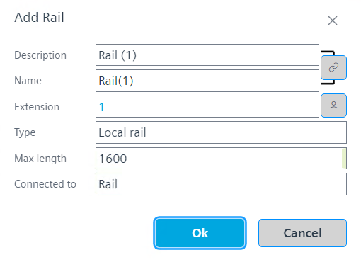
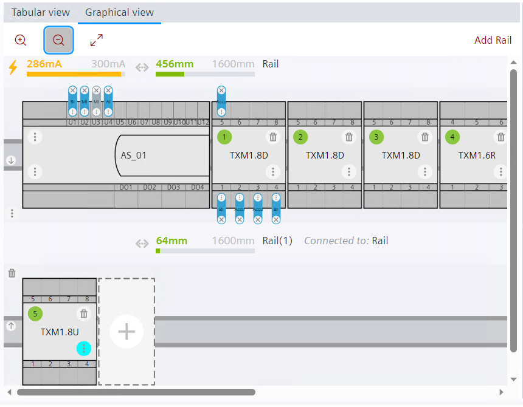
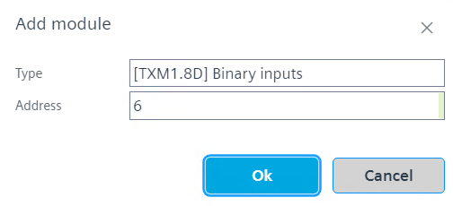
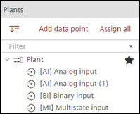
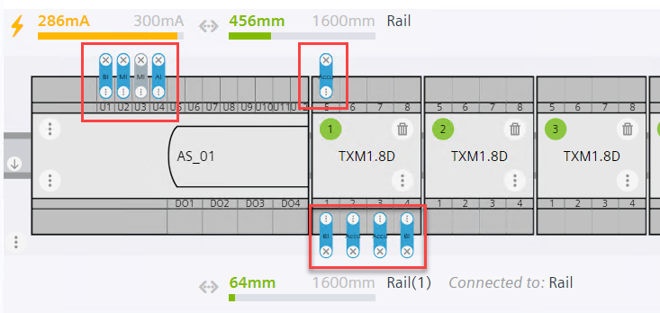

创建导轨
1. Add rails
- Go to Building > Building Structure.
- Right-click the automation station and select Go to engineering.
- Open the I/O configuration task.
- Click the Graphical view tab.
- By default, a main rail is already added including the used PXC device.
- To add a local rail or decentralized rail, click Add rail.
- The Add rail dialog box opens.
- Enter the rail description, name, and maximum length.
- In the Type field, select Local rail to add a local rail or Decentralized rail to add a decentralized rail.

- In the Connected To field, you can define how the rails are connected between each other. Local rails can be connected to any rail. Decentralized rail can be connected to main or other decentralized rails.
- Click OK.
- A rail is added. For decentralized rails, the tool automatically adds an own power supply to the new rail. It also creates bus interface modules TXA1.IBE on both the decentralized rail and the main rail.

前往Settings > Device defaults如果您想更改分散式导轨自动添加电源的默认类型。
2. Add module or accessory to rails
There is no need to manually create modules if you useAssign data points过程（参见步骤 3。分配所有数据点）。
- In the graphical view, click on the plus sign to open the list of available modules and accessories.
- The Add moduledialog box opens.
- With Add module, you can also add additional power supply if needed.
- Select the type and address of the module.
- Add the power supply module to the main rail and local rail.

- Click OK.
- A module is added to the selected rail.
当模块添加到导轨时，长度将自动计算并显示在每个导轨的图形视图之前。地方铁路没有自己的供电计算。任何向本地轨道添加的电源都是连接的主轨道或分散轨道的一部分。

3. Assign all data points
看Creating plants and I/O data points关于如何创建 I/O 数据点。
通过将点拖放到模块来逐一分配数据点（请参阅本节顶部的视频）或使用Assign data points程序（见下文）。
- Go to the Plants navigation view.
- You can see a list of data points.

- To assign all data points to the modules in the rails, click Assign all in the Plants navigation view.
- The data points are assigned to the modules in the rails. The data points appear in blue color on the assigned rails.

如果所需的 TX-I/O 模块不存在，该工具会自动创建它们。前往Settings > Device defaults更改自动创建的默认模块类型。
4. Check functionality of rails
- Rails are engineered and want to check its functionality.
- Click on the Check button on the top of the Plants navigation view.
- See the log messages in the Log view. If the rails are engineered correctly, the log displays a message as Check successful.
要获取铁路工程报告，请参阅Types of reports.